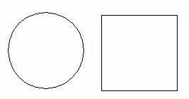
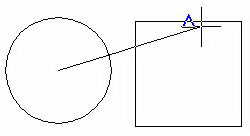
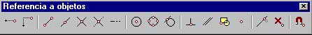

Se llaman modos a las configuraciones especiales del área de trabajo en la que se
resaltan determinadas características. Ya se ha mencionado al principio el modo
Forzar Cursor. Vamos a ver ahora otros dos:
El modo ORTO
El modo de trabajo ORTO
obliga a seleccionar o dibujar únicamente a lo largo de las líneas cuadrantes
horizontal y vertical. Nos asegura ángulos rectos precisos.
Para
activarlo/desactivarlo basta con pinchar el botón de la barra inferior de
estado
El modo
REFENT
Imaginemos que queremos
trazar una línea desde un vértice del cuadrado hacia cualquier otra dirección.
Podríamos tener FORZC activado junto a la rejilla y así facilitar la labor de
marcar el primer punto. El modo REFENT fuerza al cursor a iniciar la siguiente
orden a partir de un punto en concreto de un objeto.
1.
Activa el modo REFENT pulsando el botón
inferior .
2.
Mueve el cursor hacia un vértice del cuadrado sin pinchar
clic.
Observa que automáticamente aparece
un cuadradito amarillo y el cursor fuerza hacia su posición.
En ocasiones, será de mucha utilidad
este modo, aunque en otras, deberemos desactivarlo, ya que no querremos iniciar
el punto en un vértice, sino al lado o cerca del mismo.
Referencia
a otras entidades
Así como el modo REFENT
fuerza al cursor a iniciar una orden a partir del punto final de alguna
entidad, es posible que queramos averiguar otro punto en concreto de dicha
entidad. Por ejemplo:
1.
Borra todos los dibujos de la pantalla.
2.
Dibuja un círculo y un cuadrado de más o menos el mismo
tamaño.

3.
Inicia la orden LINEA.
4.
Desactiva REFENT
Imaginemos ahora que
queremos trazar una línea desde el centro del círculo hasta el punto medio del
segmento superior del cuadrado:
5.
Pulsa la tecla Control y sin soltarla, pulsa
el botón derecho del ratón.
6.
Elige Centro
7.
Sitúa el cursor más o menos en el centro del círculo.
8.
Cuando veas la marca de referencia, haz clic
9.
Vuelve al menú de referencia a objetos (ctrl. + botón
derecho)
10.
Elige Punto medio.
11.
Sitúa el cursor cercano al punto medio de la línea superior
del cuadrado.

12.
Clic para fijarlo.
13.
Esc para finalizar la orden línea.
Este sistema fuerza el
cursor en puntos de objetos ya dibujados que servirán de referencia. En vez de
utilizar la combinación ctrl. + Botón derecho también podemos desplegar
la barra de referencia a objetos con el botón 
